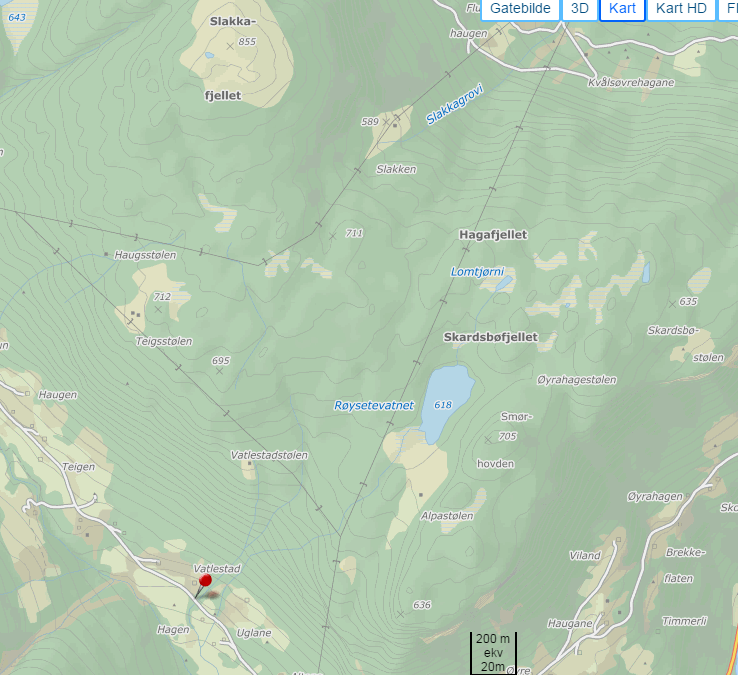

Main components of the water cycle
Draw the water cycle with water storages, and processes between each storage.
Calculate residence times
How do we estimate residence times? T = Volume / Yearly fluxes Estimate the residence times in the atmosphere and lake/rivers. Atmosphere: 0.025 yr (9 days)
Rivers and lakes: 4 yr
Residence time distribution
What does it mean? The previous residence times are mean values .
They follow distributions (like probability distributions) at different scales: world, continents, catchments…
Different scales of water cycles/budgets
Earth
Catchment
City
Water balance of a human diversion
Some vocabulary
Discharge (or water flow): volume of water passing through a given point at a given time
Runoff: Often used for discharge. Should be only related to surface processes (water runs off an impervious surface)
Watershed (or catchment): the geographical area drained by a watercourse. It can range from small headwater catchments to large river or lake basins
There is great hydrology glossary online: http://unesdoc.unesco.org/images/0022/002218/221862M.pdf
Show me the watershed

Exception: karstic aquifers
Exception: karstic aquifers
Spring at Aachtopf: approx. 10m3/s
Exception: human alterations
Exception: human alterations
Water balance for Switzerland
Anything new? The virtual water component
Approximate country area with 1500mm of annual precipitation?
How much glacier melt was missing?
Glacierized areas in Switzerland: 944 km2
Average glacier mass balance?
Which water balance seems more accurate / coherent? The second one
Water budget at the catchment scale
The variation in volume of water stored in a catchment can be written as: \[\frac{dv}{dt} = p - r_s - gw -et\]
where \(p\) is the precipitation rate, \(r_s\) the surface runoff, \(gw\) the net rate of groundwater flow and \(et\) the rate of evapotranspiration.
\(\frac{dv}{dt}\) comprises variations in any water storage: groundwater, surface water, snow and ice
Virtual water
Cowspiracy says that:
The USGS says that livestock withdrawals accounted for about 1 percent of total freshwater withdrawals for all uses excluding thermoelectric power.
Crazy difference
The larger estimate counts everything, including precipitation on the fields
But many fields are not useable for other things
Reality probably in between
Interactions with other cycles
How does the water cycle interact with carbon cycle Water is needed for vegetation to grow and fix atmospheric carbon
The weathering of silicates traps CO2: 1 Gt/year against 30 Gt/yr of emissions (https://www.skepticalscience.com/weathering.html )
Those figures could change with glacier retreat and warmer temperatures.
How does it interact with the nitrogen cycle? Gets transported by water
Gets fixed by plant growth
Oscillations in CO2 concentration
Explain the oscillations Seasonal variations in plant growth affect CO2 concentrations
Cycles in the Artic / Norway
Energy balance
What is the expression of \(Q_m\) , the energy flux available for melt?
What are turbulent heat fluxes?
Heat exchanges that are driven mass movement (wind) and involve phase changes
Latent heat flux? Heat flux during phase changes
How can latent heat fluxes affect temperatures at the local level? When it snows very intensely, the melting of snow flakes can progressively cool the lower areas, resulting in lower snow line than initally expected
Latent heat fluxes?
On the other hand, what impact can dry soils have on local temperatures? The lack of soil water to evaporate can increase temperatures (reduced latent heat fluxes)
This can lead to heat waves later in the summer. Warsaw and Lyon have for example record highs in August
Latent heat is also the reason why the snowpack may remain hard on a warm spring day, if initially covered by a thin layer of new snow
Think of a natural cooling device based on this process? Wet pottery jars as low-tech fridges
Sensible heat fluxes?
What is sensible heat? Heat exchanged by a body or thermodynamic system in which the exchange of heat changes the temperature of the body or system
In meteorology, the term sensible heat flux means? the heat fluxes between the Earth’s surface and the atmosphere which result in temperature changes
Radiative fluxes
Shortwave radiation from the sun (can be reflected by the earth’s surface)
Longwave radiation emitted by the earth’s surface (from the earth) and the atmosphere (towards the earth)
What is albedo?
Percentage of shortwave radiation reflected by a surface
Fresh snow? 80-95%
Forests 10-20%
Asphalt 5-10%
Average earth’s albedo 30-35%
Feedback between climate and local hydrological variables
Which important negative feedback effect from land surface changes will affect the climate in alpine / polar areas? Albedo effect: one reason why high latitude are more affected by warming
What’s the Foehn wind?
A warm and dry wind that
blows than the lee side of a mountain range
Why? Orographic precipitation forcing
Adiabatic cooling and warming with different lapse rates
Why different lapse rates? Less moisture means less latent heat spent to evaporate water
Geographical examples? Eastern Patagonia, deep valleys (Eikesdalen, Valais in CH), chinook wind in Calgary, Finnmark east of Lyngen
Precipitation map: regions with foehn effect?
Climate change and the hydrological cycle
Potential impacts of climate change
More intense and frequent extreme rain events
Drier low latitudes
XXX
Take home messages
Hydrology: study of water volumes and flows on and beneath the earth’s surface
Vapor formation and transport driven by solar energy
Precipitation, surface and sub-surface flows driven by gravitational and capillary forces
Catchment: area of land in which all water flows towards a defined outlet
Water budget based on conservation of mass principle
Usually precipitation = surface runoff + evapotranspiration
Pay attention to ice and groundwater storages
Questions figures you may find, especially when they are indirect (i.e. virtual water)
Book chapters
Elements of physical hydrology. Chapters 1, 2
Hydrology in Practice. Chaper 1
Online resources: Norway / Europe
Includes:
glossary of hydrology (http://hydrologie.org/glu/aglo.htm )
manual on flood forecasting and warning (in french)
manual on stream gauging
manual on estimation of probable maximum precipitation
manual on low-flow estimation and prediction
guidelines on the role, operation and management of National Hydrological Services
Recent and likely future changes in the hydrological cycle
VIDEO
Sonia Seneviratne - Effects of land hydrology on atmospheric processes and climate change
https://www.youtube.com/watch?v=zMjchti6LdM
8: Interaction between land and atmosphere
18: Dry springs followed by hot summers Meteorological drought: critical precipitation deficit Soil-moisture drought: soil-moisture deficit Hydrological drought: streamflow and groundwater deficit.
25: How are they inter related
28: Comparing 2 methods for potential evapotranspiration
Sonia Seneviratne - Effects of land hydrology on atmospheric processes and climate change
29: Uncertaincy in evapotranspiration (can be up to 30%)
34: Wetter gets wetter, drier gets drier? no!
39: Impact of no-till farming. crop residues modify the albedo: increases the albedo. strongest cooling for the strongest temperature very strong asymetric impact of temperature: a bit like forest -> importance of looking at extremes and not mean
45: Question: with climate change, less cloud cover more cooling? feedback loops
51: Question: how strong is the link between soil moisture storage and streamflow?